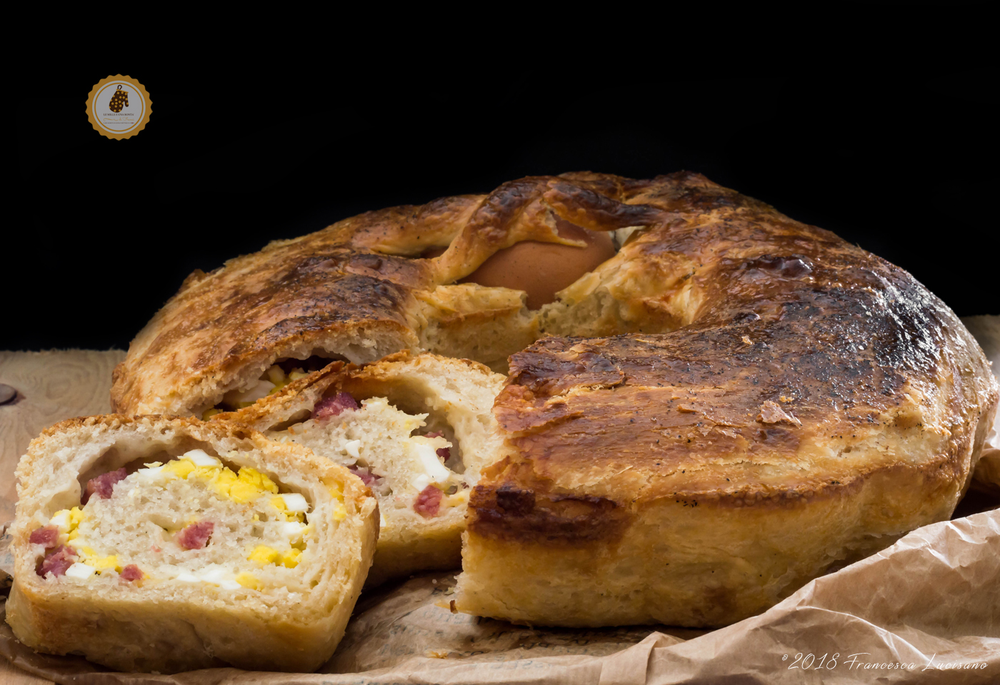

pizza

casatiello

Esplora il cuore della cucina napoletana con tre ricette simbolo della tradizione e dei sapori autentici del Sud Italia: la pizza, il casatiello e la pastiera. La pizza napoletana, famosa in tutto il mondo, incanta con il suo impasto soffice e il cornicione alto, preparata con ingredienti semplici e genuini come pomodoro San Marzano, mozzarella di bufala e basilico fresco. Un piatto simbolo di convivialità, che racchiude l’essenza dell’Italia. Il casatiello, rustico e ricco di storia, è tipico del periodo pasquale e rappresenta abbondanza e festa. Il suo impasto morbido è arricchito da salumi e formaggi, con uova incastonate in superficie che si cuociono insieme al pane, rendendolo unico e scenografico. Infine, la pastiera napoletana è un dolce che profuma di primavera: una torta fragrante di pasta frolla ripiena di grano cotto, ricotta e delicati aromi di fiori d’arancio, preparata per celebrare la Pasqua e le riunioni familiari. Ogni morso di questi piatti racconta una storia di tradizioni tramandate e di passione per la buona cucina, portando in tavola un po’ della magia di Napoli.